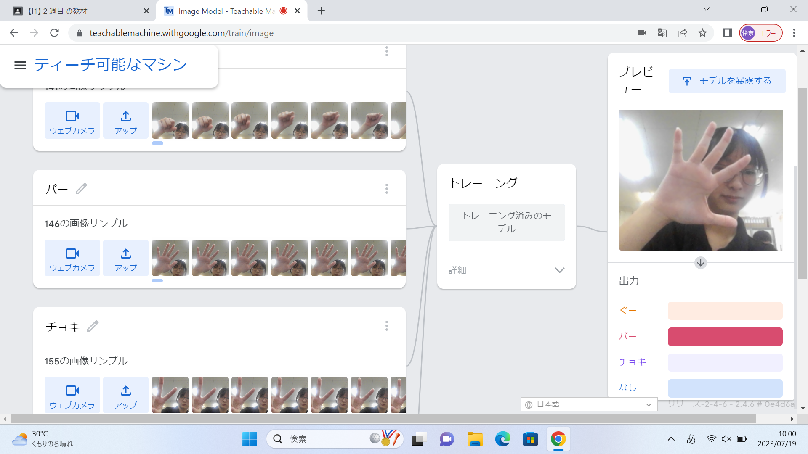
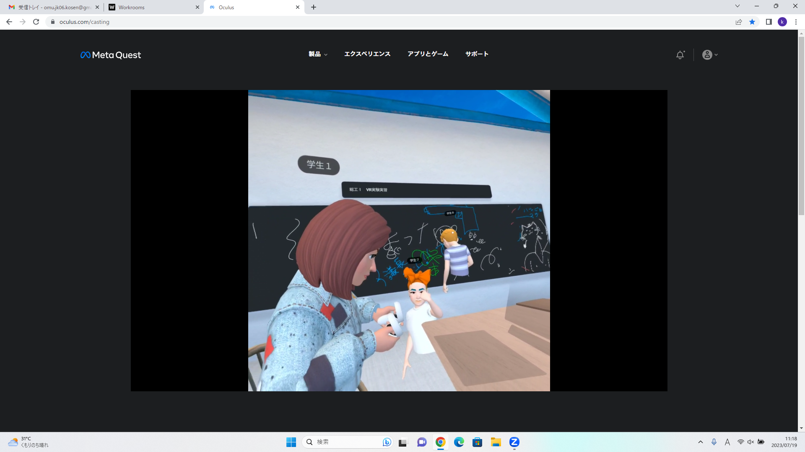

2-1 １週目のレポートをHTMLで作る
１週目のレポート
1.内容
githubを使用し、rep01を開いて鉛筆マークを押し、書き換えたいところを編集する。
2.感想
一つでも文字を間違えたりしたら、そのページに行けなくなったりするのでしっかり文字があっているか確認しないといけないと思いました。
2-2 機械学習体験

1.内容
Teachable Machineを使って画像を読みとるプロジェクトを作りました。
2.感想
最初に読み取りたい画像のサンプルを動画に取ってそれをトレーニングするだけで画像を読み取ってくれるのですごい簡単だと思いました。
しっかりと読み取ってくれないときがあるのが少し不便だと思いました。
2-3 VR（バーチャルリアリティー：Virtual Reality）会議室の体験

1.内容
VR体験ができる器具の中で、ミラーリングでパソコンにVR画面を映し、Worksroomsを開いてデスクの位置の設定などをする。
2.感想
デスクなどの設定をするのは簡単だったけれど、どこの位置にあるか感覚を掴むのが少し難しかったです。
VR体験は正直そんなやろと思っていたけれど、初めてしてみて面白かったし楽しかったです。